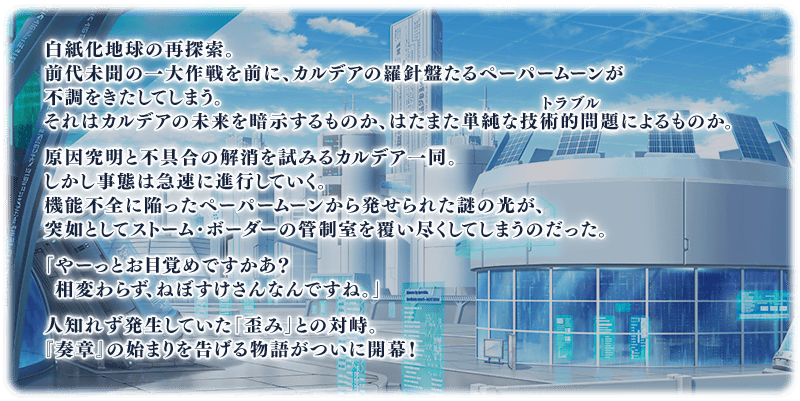
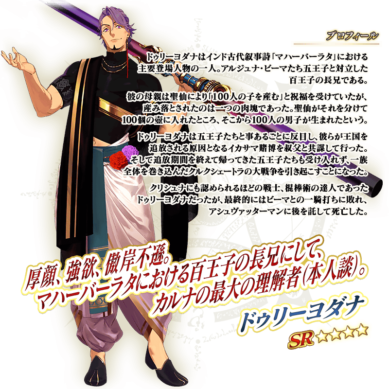
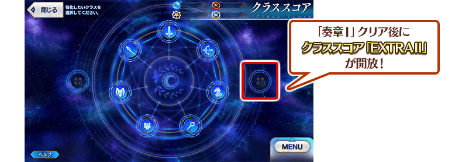
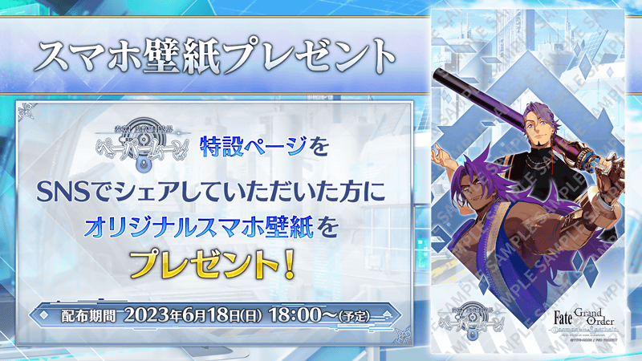

【6月14日(三) 20:00追記】
『奏章Ⅰ 虛數羅針內界 平面之月』預定2023年6月18日(日)開幕！
開放條件為通過奏章序幕(プロローグ) 「應盡職責的呼喚 0」，敬請務必推進主線關卡期待續報！
◆開幕預定日◆
2023年6月18日(日) 17:00～(預定)
◆開放條件◆
通過奏章序幕(プロローグ) 「應盡職責的呼喚 0」
※不需要通過亞種特異點(從Ⅰ到Ⅳ)、主線關卡第2部 第5.5章、第2部 第6.5章。
※本頁面皆為開發中圖片。會有與實際圖片相異的情況。
介紹預定自2023年6月18日(日) 17:00舉辦的「平面之月 怖軍Pick Up召喚」預定登場的新從者「★5(SSR)怖軍」「★4(SR)難敵」的立繪。

通過「奏章Ⅰ 虛數羅針內界 平面之月」後，開放「職階刻痕」的「EXTRAⅡ」！
「職階刻痕」是可提高做為自身御主能力的強化各職階功能。
「EXTRAⅡ」雖然是Extra職階的中的4種做為對象的「職階刻痕」，但
於通過「奏章Ⅰ 虛數羅針內界 平面之月」的時間點只可得到1職階的效果。
◆開放預定日◆
2023年6月18日(日) 17:00～(預定)
◆開放條件◆
通過「奏章Ⅰ 虛數羅針內界 平面之月」

介紹預定自2023年6月18日(日) 17:00舉辦的「平面之月 怖軍Pick Up召喚」預定先行登場的3種常駐概念禮裝插圖。
※配合故事召喚的翻新，下述的概念禮裝在「平面之月 怖軍Pick Up召喚」的舉辦期間結束後，變得會從教學召喚被抽出，不會從故事召喚被抽出。
・★4(SR)コードキャスト

由於在「Fate/Grand Order 迦勒底放送局 Vol.20 奏章Ⅰ 虛數羅針內界 平面之月 開幕前夕 & FGO Fes. 2023 SP」達成7萬轉推，實施放送記念登入獎勵！
在下述期間中登入的話，贈送聖晶石14個。
◆領取期間◆
2023年6月15日(四) 3:00～6月22日(四) 2:59
上述期間中，在初次登入到「Fate/Grand Order」的時間點，贈予到禮物箱。
※期間內未登入的話無法領取。
※禮物只能領取1次。
◆贈送內容◆
聖晶石 14個
◆贈送對象◆
2023年6月15日(四) 2:59前通過「特異點F 炎上汙染都市 冬木」的御主對象
※上述時間前，在管理室(ターミナル)畫面的關卡橫幅必須要有「CLEAR」的文字顯示。
在「奏章Ⅰ 虛數羅針內界 平面之月」的特設頁面，智慧型手機用桌面的預定贈送！
在社群媒體分享特設頁面就能下載，到配發期間的話請務必使用。
◆配發期間◆
2023年6月18日(日) 17:00～(預定)

其他還有期間限定『「奏章Ⅰ 虛數羅針內界 平面之月」開幕前夕宣傳活動』等的情報公開中！
關於詳情，請自下述橫幅確認。
■『「奏章Ⅰ 虛數羅針內界 平面之月」開幕前夕宣傳活動』詳細情報

■『「奏章Ⅰ」開幕前夕Pick Up召喚』詳細情報